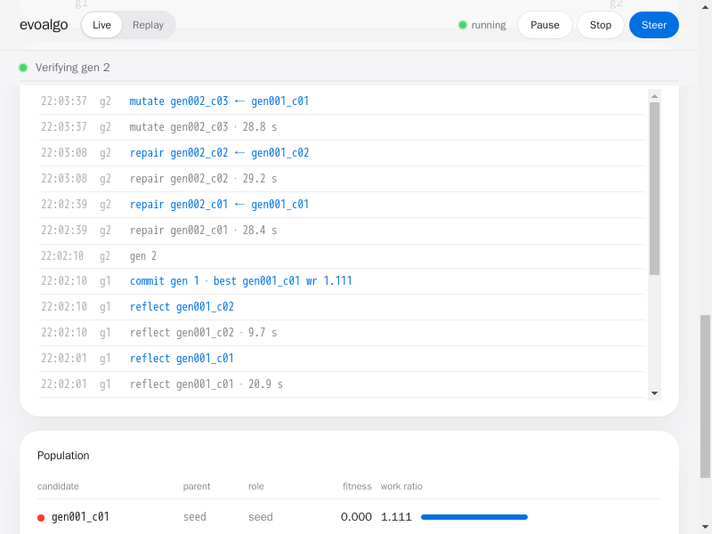
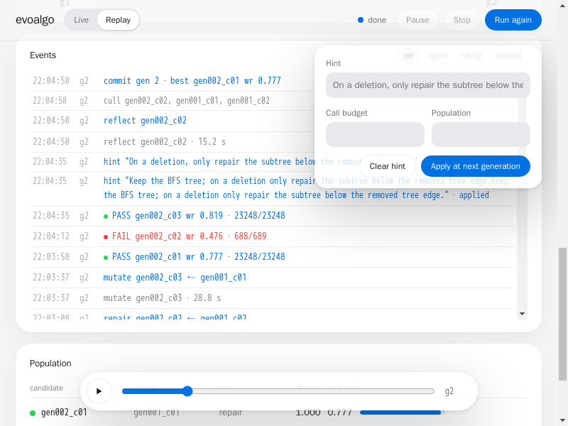

BSc thesis defense - draft
AI-Assisted Discovery of Dynamic Graph Algorithms via Evolutionary Code Repair
Thonmay Md Thoriqul Islam
Supervisor: Gregory Reynolds Morse
ELTE Faculty of Informatics, Computer Science BSc
The problem: keep a graph search correct while the graph changes
Passing example tests is not enough for a dynamic algorithm.
- After every edge insert or delete, update a BFS tree, a DFS tree or an LBFS ordering without recomputing it.
- Outputs are not unique: many valid BFS or DFS trees exist, so the answer cannot be compared for equality.
- Known correct algorithms are proved, not tested; one stale value breaks the invariant.
- BFS and DFS: calibration tier (known solutions). LBFS: open tier.
1 / 51,465
cases failed at n = 5 by a candidate that passed every graph up to n = 4
Y7
a one-line mutation of Yang et al.'s dynamic DFS that fails only after several updates, never after one
Three contributions, one tool
Engine, verifier and agents are separate components; the UI only reads the event log.
- C1 Research UI: launch, monitor, steer and replay a run (event-sourced).
- C2 Verifier: certificate checks on every non-isomorphic graph up to n = 5.
- C3 Agents: generator, reflector and repairer; specialists spawned on a plateau.
- Python package with CLI, local web UI, and a harness for external coding agents.
C2: exhaustive, certificate-based verification
Every non-isomorphic graph up to n = 5, every single edge flip, seeded update sequences.
Universenauty: 46,752 rooted digraphs (BFS, DFS); 1,098 undirected graphs (LBFS)
→
Updatesall single flips + seeded sequences of up to 20 operations
→
CertificateBFS distances and parents; DFS laminar times; LBFS four-point rule
→
Two gradessearch n ≤ 4 in seconds; final n ≤ 5, 4,187,856 sequences
| Self-test at n ≤ 5 | References accepted | Seeded faults rejected | False negatives |
|---|
| dynamic BFS | 1 + control | 14 / 14 | 0 |
| dynamic DFS (incl. Yang et al.) | 2 + control | 22 / 22 | 0 |
| dynamic LBFS | 1 + control | 12 / 12 | 0 |
Running model-written code safely
Each candidate runs in a Linux namespace jail; parallel chunks merge in order.
- User, network, mount, PID and IPC namespaces (
unshare); host data hidden, tree read-only, own /proc.
- CPU, memory and process limits; a kill is reported by signal, not guessed.
- Verification chunks run in a process pool, sized to free memory; a dead worker falls back to serial.
- Coding agents run in their own jail without the verifier's code.
C3: generate, reflect, repair
A bounded counterexample becomes a targeted repair.
Generatorwrites candidates from the brief and a parent
→
Verifiersearch grade; first failing case
→
Reflectorstructured root cause of that case
→
Repairerfixed candidate; efficiency pressure in selection
| eval1 (Qwen3.8-27B, 3 seeds) | BFS | DFS | LBFS |
|---|
| orchestrator | 0.65 (3/3) | 0.22 (3/3) | 0.45 (3/3) |
| no reflection | 1.38 (2/3) | 0.25 (3/3) | 0.58 (3/3) |
| single coding agent | 0.69 (3/3) | 0.32 (3/3) | 0.21 (3/3) |
Median work vs recompute (lower is better, 1.0 = no gain), final-grade PASS out of 3. Thesis Table 6.3.
Two results I did not expect
Reported as found, including the negative one.
Dynamic agent generation: no significant effect
- LBFS, 8 paired seeds: medians 0.44 vs 0.45.
- Exact Wilcoxon p = 0.46.
- Mechanism works: plateau detected in 7 of 8 runs; 1 specialist candidate became the final answer.
Small-graph efficiency does not predict large-graph speed
| Speedup at n = 128 | orch. | single |
|---|
| BFS | 66x | 37x |
| DFS | 2.6x | 4.0x |
| LBFS | 0.21x | 2.55x |
Orchestrator LBFS: 2x cheaper at n ≤ 5, 5x slower at n = 128. Thesis Tables 6.2, 6.4.
C1: observe and steer a live run
The UI is a pure reducer over the engine's event log; commands go back through a control file.

Hint acknowledged by the engine at generation 2

Replay of a finished run with the generation scrubber
Live demo
About 4 minutes; a finished run is ready if the network fails.
- Launch:
evoalgo ui, open the access link, New Run: dynamic BFS.
- Monitor: generations, candidates, fitness and work ratio stream in live.
- Steer: send a hint, see it acknowledged; pause, then resume.
- Inspect a failure: failing graph and update, the reflection, the repaired candidate.
- Replay: scrub back through committed generations of a finished run.
- Verifier:
evoalgo verify --problem dynamic_bfs --n-max 3 accepts the reference and rejects the seeded faults.
Conclusion
All three registered completion signals are met; the limits are stated.
Delivered
- C1: launch, monitor, steer and replay end to end.
- C2: 48 / 48 seeded faults rejected at n ≤ 5.
- C3: correct dynamic BFS in 3 / 3 seeds without intervention.
Limits and next steps
- Bounded verification, not a proof.
- Few seeds, one provider; LLM sampling not seeded.
- Next: fewer tokens, fault corpora for SCC and MCS, more models.
BACKUP
Testing the checker itself
The DFS checker once accepted a parent tree no DFS produces.
- Bug: a parent set to a shallower ancestor via a forward edge passed the certificate.
- Fix: require the absence of a forward-cross edge; exhaustive cross-check at n ≤ 4.
- 274,942 certificates checked against brute-force DFS runs, 0 wrong verdicts.
- Beyond the bound: 1.44 M random updates on n = 6 to 30, certificate checked after every update, no violation.
BACKUP
Failure inspection in the UI
Failures grouped by kind and first-failing size.
BACKUP
Reliability and testing
Automated evidence, re-run on the described commit.
- pytest suite incl. 5 slow n ≤ 5 corpus tests; 15 Vitest UI tests; execution record of 32 steps.
- CI on every code push: lint, fast pytest on Python 3.11 and 3.12, UI type check, tests and build.
- Checkpoints: generation file and COMMITTED marker each fsynced and atomically replaced; resume discards an incomplete generation.
- Event log: append-only, fsynced; replay and status read the same file.